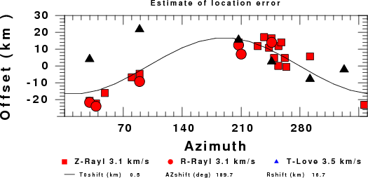
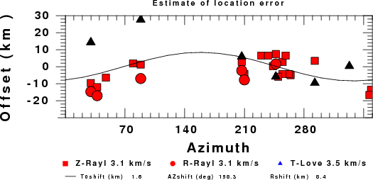

Introduction
The programs wvfgrd96, wvfmtd96 and wvfmt96
output the time shift used to better match the observed and predicted
waveforms in the sac header value USER9 in the
predicted waveform, eg., CCMZ.pre. Until now this has not been
used quantitatively, but has served an an indication of several
different effects.
The convention for the time shift is that a positive value
indicates that the synthetic traces must be moved later in time
for alignment.
There are different causes for this time shift:
- The origin time and epicentral distance are incorrect
- The velocity model used for the inversion is incorrect
- The velocity model used to define the P-arrival time is not the
same as the velocity model used for the waveform inversion (assuming
that the initial trace alignment is based on the P arrival time)
The program wvfdly96 considers the azimuthal variation of the Z
R and T components, which are contained in the files Z.dat, R.dat and
T.dat
The files consist of one line per station with an entry
Azimuth Time_Shift
Assuming only a mislocation, the time shifts are fit to a functional
form as a function of azimuth to the station:
Time_shift = A + B cos Azimuth + C Sin Azimuth
For small changes in epicentral location,
A is the change in origin time
The second two terms can be rewritten, for interpretation, as
R/V cos ( Az - Theta)
where R is the shift of the epicenter in km and Theta + 180 is the
direction of the epicenter shift
Consider the following example with time shifts indicated by -, 0 +
where I is the initial epicenter and E is the true
epicenter
0 delay * *
| | * *
| | * *
+ ------I--E--- - **---|----|----|----| Az
| | * 90 *180 270 360
| | * *
| | *
0 |
In this figure stations to the east would be closer to the true
epicenter, E, than to the
assumed epicenter, I, and
thus the prediction waveform would be later than observed. The program wvfgrd96 would shift the predicted
waveform to the left on the plots, which would be a negative
delay. For stations to the west, the true travel distance is
greater than the assumed distance, and the predictions would appear
before the actual arrival; wvfgrd96 would
then shift the prediction later in time,. a positive time shift.
This pattern would indicate a functional fit in this example would be
time_shift = A + C sin Az with C negative
After removing the contstant time shift, the epicenter should be moved
to the east, e.g., 270 + 180 degrees
For use with regional moment tensor, it is assumed that the time shift
is related to the delay of the Rayleigh wave on the Z and R components
and the Love wave on the T component. Further is it assumed that the
ratio of Love-wave group velocity to Rayleigh-wave is 0.92 and that
there is no other dispersion effect in the frequency band of the
waveform match. Further the code assumes that the Rayleigh-wave
group velocity is 3.1 km/s.
Thus the time shift for the T component is of the form
Time_shift = A + 0.92 B cos Azimuth + 0.92 C Sin Azimuth
The A, B and C parameters are determined by least squares and no
weighting (e.g., distance) is applied to the regression.
DODELAY and wvfgrd96
After the source inversion, the script DODELAY
is run to extract the delays from the predicted waveforms, to estiamte
the shift and to plot the results using the program genplt.
The following example provides the background for writing this program
and the DODELAY script:
A recent earthquake in the Northwest Territories of Canada was located
by the USGS NEIC as follows:
USGS Location
2010/09/04 00:23:13 62.943 -125.718 7.1 4.50 NT, Canada
The time shifts associated with the waveforms showed significant
delays. Running DODELAY yielded the following image:

Subsequencly the Natural Resources Canada (NRCAN) solution was
published.
NRCAN Location
2010/09/04 00:23:11.35 62.864 -125.821 1.0 4.8 ML 120 km of Wrigley, NT
Following the source inversion starting with these coordinates, the
interpreted delays yield the following figure:

The NRCAN solution is 10.24 km away from the USGS solution in an
azimuthal direction of 210 degrees. A comparison of the intitial time
shifts showed that those for the NRCAN location were smaller than for
the NEIC solution. This is also evident in the plots where the inferred
Rayleigh wave distance offsets are smaller for the NRCAN solution than
for the NEIC solution. There is some consistency in the orgin time
shift, e.g., that the NEIC solution would want 00:23:13.6 and the NRCAN
solution 00:23:13.0.
The output of wvfdly96 is only
mean to interpret waveform matching time shifts in terms of a source
offset. It does not provide a true relation because of the simple
assumptions of the group velocities used. Other factors such as poor
station distribution and incorrect model still affect the results.
Large inferred time shifts are an indication that an examination of the
initial location is appropriate.
Discussion
This program may have value for testing epicentral locations base on
body-wave arrival times. If a significant azimuthal change is seen in
the independent surface-wave field, then a reexamination of the
location may be in order.
Last changed September 20, 2010